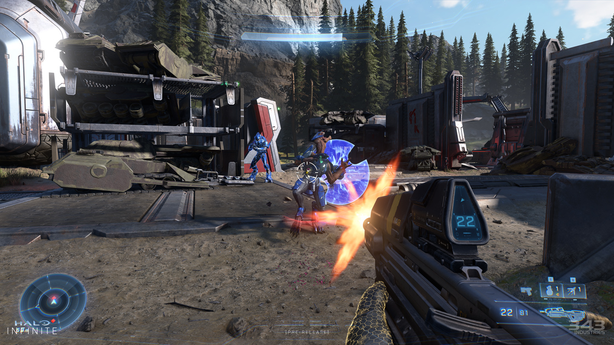
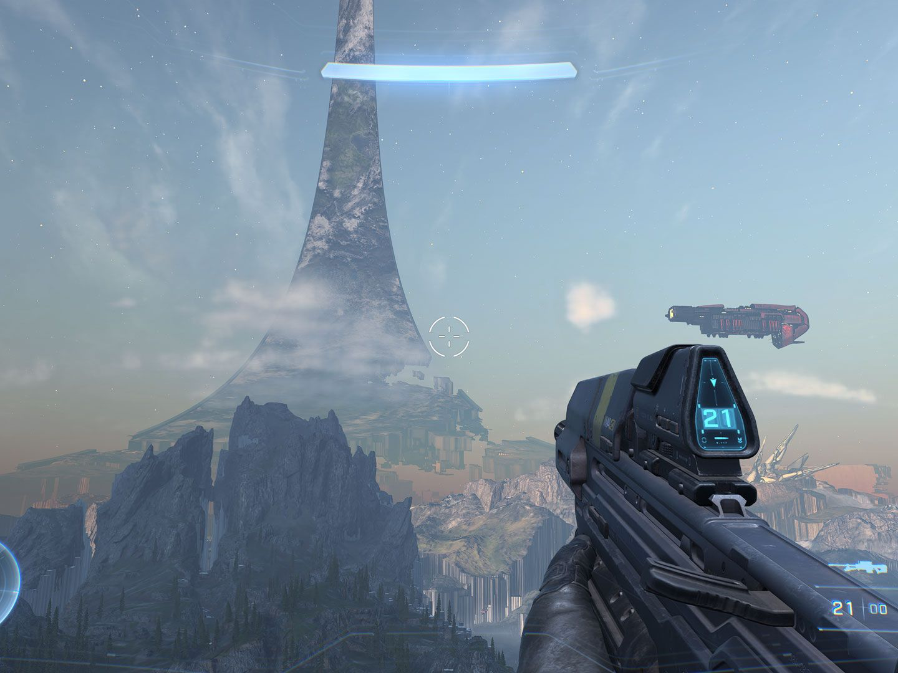
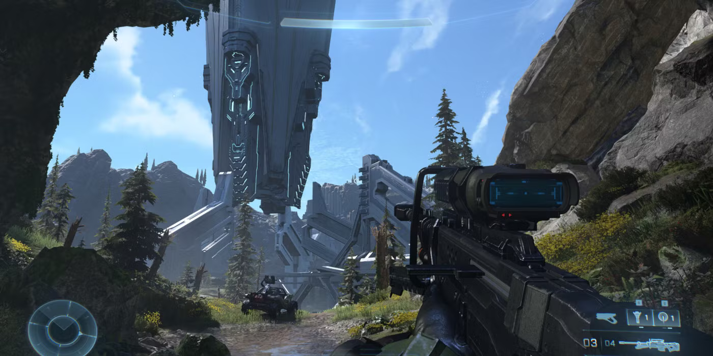
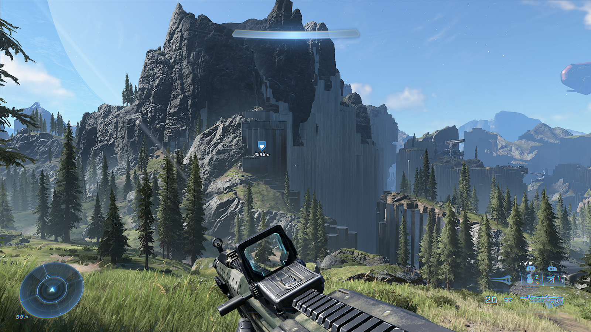
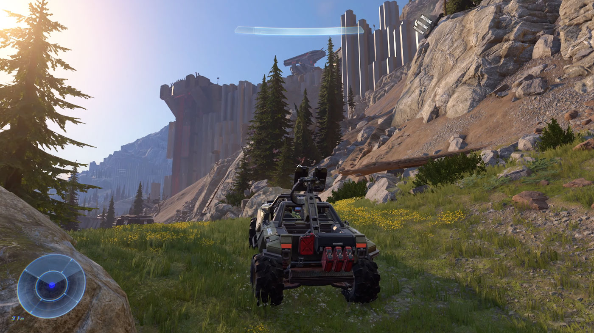
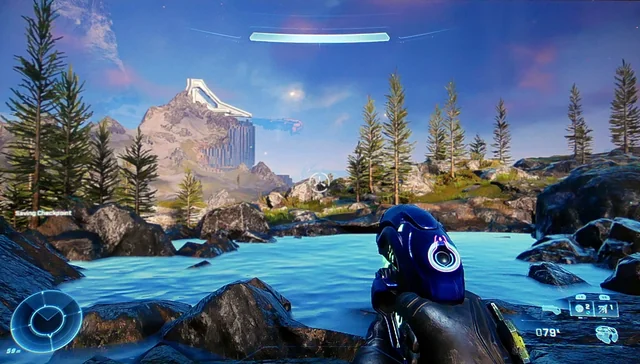

Ficha Táctica
Año de Lanzamiento: 2021
Desarrollador: 343 Industries
Consola: Xbox One, Xbox Series X/S
Género: Disparos en primera persona (FPS)
Informe de Misión
La flota de la UNSC sufre una emboscada repentina y aplastante en la órbita del misterioso Halo Zeta (Instalación 07) a manos de los Desterrados, una brutal facción mercenaria que se rebeló contra el Covenant, liderada por el despiadado cacique Brute Atriox. Tras ser derrotado en combate y arrojado al espacio profundo, el Jefe Maestro flotó a la deriva durante seis meses hasta ser rescatado por un piloto humano solitario conocido como Echo-216. Al descender a la superficie shattered del anillo, descubren que las fuerzas humanas han sido masacradas y la estructura está bajo el dominio total del enemigo.
Con la ayuda de una nueva IA llamada "El Arma" —creada específicamente para purgar e imitar las rutinas de Cortana— el Jefe Maestro emprende una campaña de guerrilla en un amplio entorno de mundo abierto. Deberá liberar puestos de avanzada, recuperar territorios estratégicos y rescatar a los marines sobrevivientes mientras enfrenta a Escharum, el nuevo líder militar de los Desterrados. A lo largo de la aventura, el Jefe Maestro desentraña los trágicos eventos finales de Cortana y descubre que Halo Zeta oculta una amenaza aún más antigua y peligrosa que el mismísimo Flood: una especie olvidada conocida como los "Eternos".
Registro Visual





